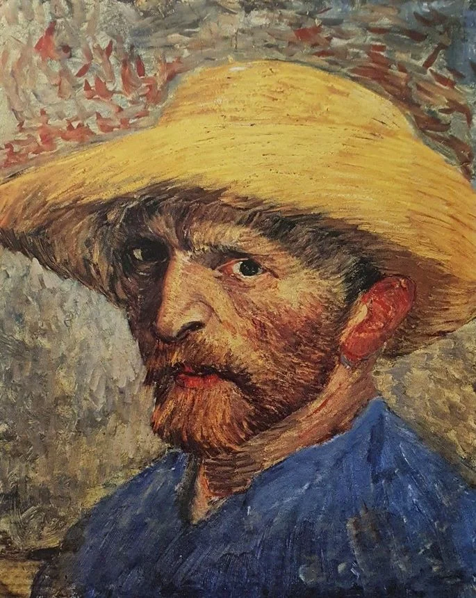

Vincent van Gogh é amplamente considerado um dos artistas mais famosos de sua época devido à sua influência duradoura na arte e ao reconhecimento póstumo de seu talento. Sua abordagem única e expressiva para a pintura, juntamente com sua vida turbulenta e trágica, contribuíram para sua notoriedade e o estabelecimento de seu legado como um dos grandes mestres da arte.

Van Gogh viveu na segunda metade do século XIX, um período marcado pela ascensão do impressionismo e pós-impressionismo. Embora tenha sido amplamente incompreendido e rejeitado durante sua vida, suas obras começaram a ganhar reconhecimento e apreciação logo após sua morte prematura em 1890. Suas pinturas, caracterizadas por pinceladas ousadas, cores vibrantes e composições expressivas, eram uma ruptura em relação às convenções artísticas tradicionais e exerceram uma forte influência sobre as gerações seguintes de artistas.
A fama de Van Gogh como um dos artistas mais renomados de sua época pode ser atribuída, em parte, à sua habilidade de transmitir emoções intensas e capturar a essência da condição humana em suas obras. Sua série de pinturas "Os Girassóis" e "Noite Estrelada" são exemplos icônicos de seu estilo distintivo e têm sido reproduzidas e exibidas em todo o mundo, tornando-se símbolos da arte moderna. Além disso, a correspondência pessoal de Van Gogh revela sua devoção à pintura como uma forma de expressão, bem como suas lutas emocionais e mentais, o que adiciona uma camada de complexidade e fascínio à sua figura.
O reconhecimento póstumo de Van Gogh como um dos artistas mais famosos de sua época também pode ser atribuído à dedicação de sua família, amigos e admiradores em preservar e promover seu trabalho. A criação da Fundação Vincent van Gogh em 1960, que cuida de seu legado e organiza exposições, ajudou a manter viva a memória do artista. Além disso, a popularização da arte moderna e o crescente interesse na vida e obra dos mestres da pintura contribuíram para o aumento da fama de Van Gogh ao longo das décadas.
Van Gogh nasceu em 1853 em uma família de classe média na Holanda. Inicialmente, ele seguiu uma carreira na área comercial, trabalhando em galerias de arte e livrarias. No entanto, seu verdadeiro chamado era a pintura, e ele dedicou-se a essa paixão, mesmo enfrentando a falta de apoio e compreensão de sua família. A busca por sua voz artística levou-o a experimentar diferentes estilos e técnicas, desde a pintura realista até a influência do impressionismo e pós-impressionismo, buscando sempre a autenticidade em suas obras.
A vida de Van Gogh foi marcada por inúmeras dificuldades financeiras e fracassos profissionais. Ele lutou para vender suas pinturas durante sua vida e dependia do apoio financeiro de seu irmão, Theo van Gogh. Sua saúde mental também foi uma preocupação constante, com episódios de depressão, ansiedade e ataques de doença mental que o levaram a internações em hospitais psiquiátricos. Apesar dessas adversidades, Van Gogh encontrou na pintura uma forma de expressar suas emoções e dar sentido à sua existência.
A história de Van Gogh ganha uma dimensão trágica com seu suicídio em 1890, aos 37 anos de idade. Sua morte prematura trouxe à tona a intensidade e a profundidade de sua arte, levando a um reconhecimento póstumo de seu talento. O trabalho de Van Gogh começou a ganhar atenção e apreciação após sua morte, com seu irmão Theo dedicando-se a promover e preservar seu legado. As cartas trocadas entre os dois irmãos também revelaram a riqueza de seus pensamentos sobre arte, amor, vida e sofrimento, oferecendo um vislumbre da mente complexa e apaixonada de Van Gogh.
O reconhecimento póstumo de Van Gogh como um dos artistas mais famosos de sua época também pode ser atribuído à dedicação de sua família, amigos e admiradores em preservar e promover seu trabalho. A criação da Fundação Vincent van Gogh em 1960, que cuida de seu legado e organiza exposições, ajudou a manter viva a memória do artista. Além disso, a popularização da arte moderna e o crescente interesse na vida e obra dos mestres da pintura contribuíram para o aumento da fama de Van Gogh ao longo das décadas.
A vida amorosa de Vincent van Gogh foi marcada por relacionamentos turbulentos e tumultuados, refletindo sua intensidade emocional e seu isolamento social. Embora tenha experimentado sentimentos profundos e buscado conexões íntimas, sua incapacidade de estabelecer relacionamentos duradouros e satisfatórios contribuiu para seu sofrimento e solidão.
Van Gogh teve vários relacionamentos amorosos ao longo de sua vida, mas nenhum deles se mostrou duradouro. Sua primeira paixão conhecida foi por sua prima, Kee Vos-Stricker, com quem ele manteve um relacionamento conturbado e problemático. Sua persistente busca pelo amor o levou a se envolver com várias mulheres ao longo de sua jornada, incluindo a prostituta Sien Hoornik, que se tornou uma figura significativa em sua vida por um período de tempo.
Apesar de suas tentativas de encontrar a felicidade e a estabilidade emocional, a natureza apaixonada e volátil de Van Gogh muitas vezes criava obstáculos em seus relacionamentos. Sua intensidade emocional e suas lutas pessoais eram difíceis de serem compreendidas e acompanhadas pelos outros. Sua necessidade de autoexpressão artística e seu compromisso inabalável com a pintura frequentemente se chocavam com as expectativas sociais e os papéis tradicionais atribuídos às mulheres na época, dificultando ainda mais a formação de relacionamentos duradouros.
Embora tenha expressado o desejo de se casar e formar uma família, a instabilidade emocional de Van Gogh, combinada com sua situação financeira precária, contribuiu para sua dificuldade em estabelecer relacionamentos amorosos estáveis. Sua saúde mental frágil e a pressão de suas próprias expectativas artísticas também afetaram seus relacionamentos, gerando conflitos e afastamentos. Apesar dessas dificuldades, a solidão e a busca por amor e conexão continuaram a ser temas recorrentes em sua arte, retratando a profundidade de suas emoções e seu anseio por uma ligação humana significativa.